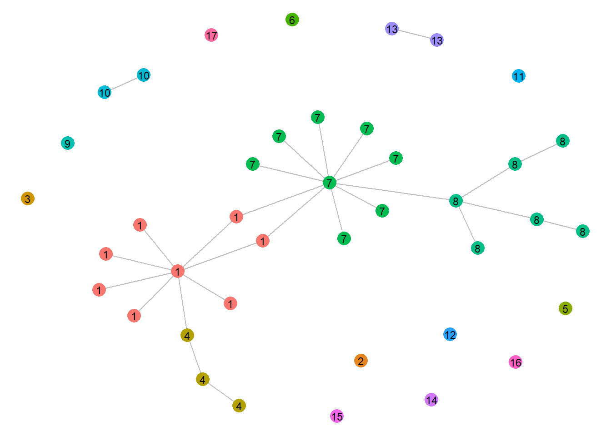
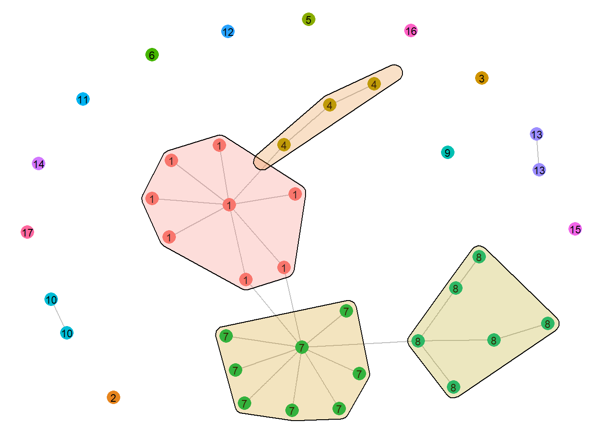
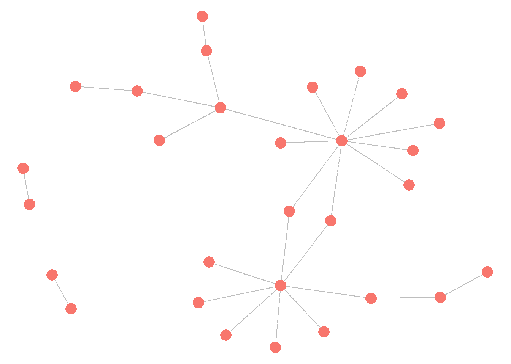
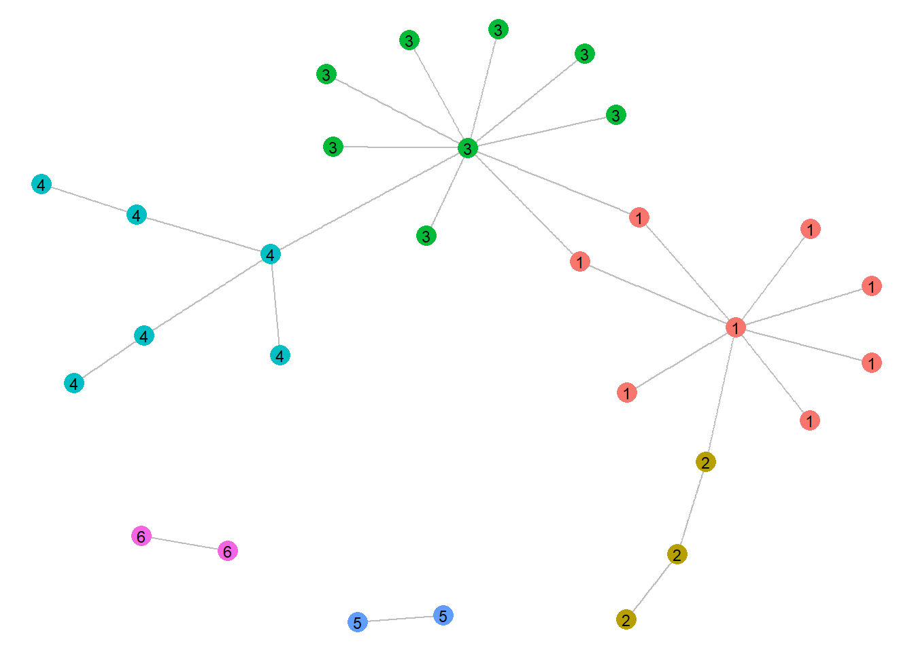
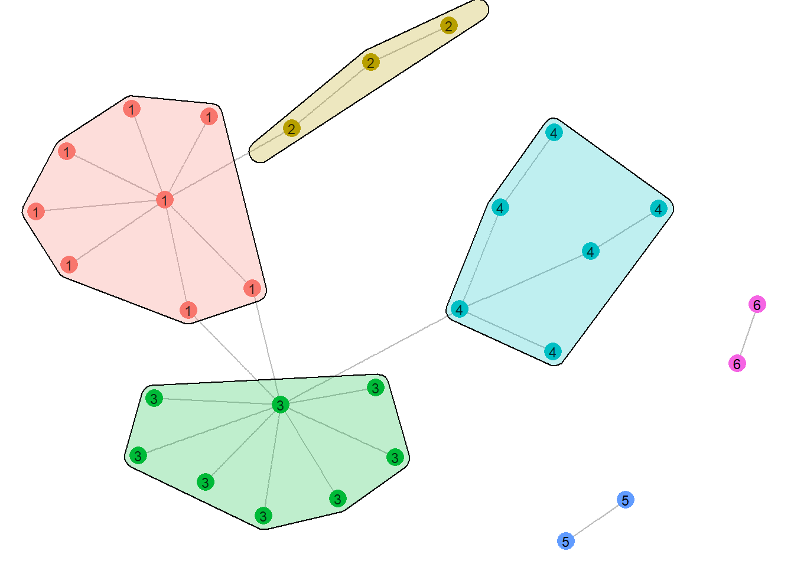
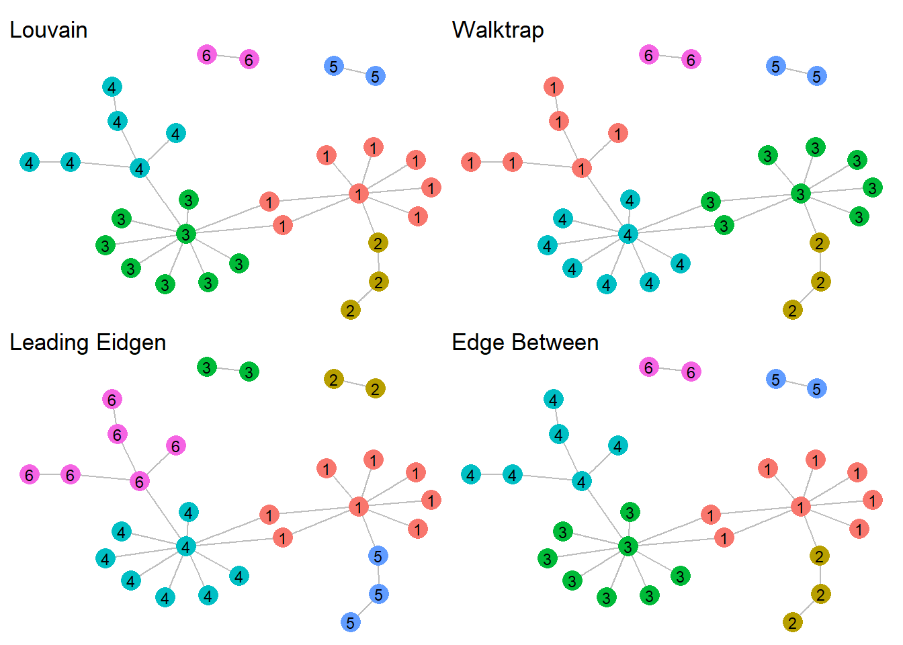
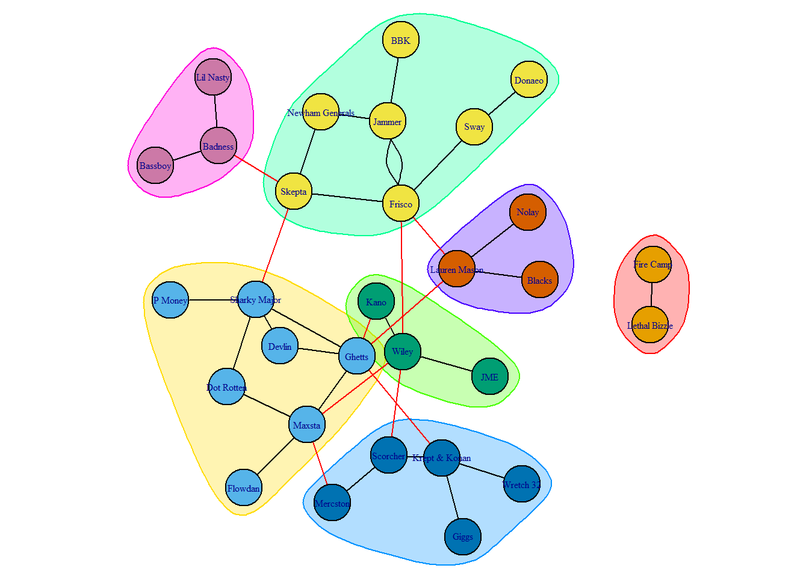

library(igraph)
library(ggraph)
library(ggforce)
library(patchwork)
library(ADAPTSNA)
library(dplyr)
library(ggplot2)8 Communities
Within your network you may have subgroups. In a class of students, there are often smaller homework groups, study groups, friendship groups, etc.. What is the demographic composition of these groups? Do subgroups appear more in some settings compared to others? What happens to these groups over time? To answer these types of questions you need a specific analytic tool, community detection.
At its core, community detection is a method used to analyse the sub components(groups) of your graph. It literally detects whether there are smaller groups within a network that are more connected to each other than to others. Using mathematically informed algorithms, various community detection approaches produce measurements of how many sub groups there are in your graph and how cohesive those subgroups are.
For this tutorial let’s use the Grime collaboration network data. This dataset is taken from the Spotify profiles of Grime artists. Nodes are the artists themselves while the edges represent collaborations. First, you need to bring in the data from 2008 and clean up the graph a bit before we dive in. This network is directed, meaning that incoming collaborations represent featuring artists on a host’s profile. Outgoing collaborations reflect an artist appearing on another’s profile. However, for the sake of this tutorial, we will ignore this particular feature of the graph (you will read why) treating ties simply as ‘collaboration.’
grime_edge_list <- load_data("GRIME_2008_Edge.csv", header = TRUE)
grime_08 <- graph_from_data_frame(d= grime_edge_list, directed = FALSE)
grime_08_clean <- delete.edges(grime_08, E(grime_08)[which_loop(grime_08)])8.1 The Process
Let’s get familiar with how to perform community detection. In this section, I will be using the Louvain algorithm since it is one of the more commonly known and comprehensible. To do so, use the cluster_lourvain() command. Please note, your network may not work with Louvain because it only works with undirected networks (hence why I brought the Grime network in as undirected). In fact, only a few community detection algorithms work well with directed networks (e.g. cluster_infomap() and cluster_edge_betweenness()).
It is strongly recommended that when you run the community detection that you put the information into an object. Then you can take a look at what is has in it.
louv <- cluster_louvain(grime_08_clean)Great, but now let’s focus on understanding what this actually means!
8.1.1 Understanding the Metrics
Remember the example of the homework/friendship groups that might exist among a class of students? Well, using this measure we can get an idea of how many of these subgroups exist in this network, and how “tightly knit” these groups really are.
louvIGRAPH clustering multi level, groups: 17, mod: 0.61
+ groups:
$`1`
[1] "Asher D" "Scorcher" "Flowdan" "Tinchy Stryder"
[5] "Frisco" "Kano" "Wiley" "Lauren Mason"
$`2`
[1] "Dizzee Rascal"
$`3`
[1] "Lethal Bizzle"
+ ... omitted several groups/verticesOur new object, louv, shows us that the algorithm has detected 17 subgroups (more on this later) and that the network has a modularity score of 0.61. Then, this lists the separate groups with all their memebers assigning each node a membership into one of the groups.
Modularity is a score of how separated, or modular, the network is indicating how cohesive the groups are compared to the whole network. Put simply, modularity measures the density of each group compared to the density inside the group. The statistic is measured from -1/2 to +1 with metrics closer to 1 indicating higher modularity. It is a measurement that compares what we expect to see if the graph were completely random with what is actually observed. Use modularity(). The modularity of this network is 0.61 (rounded) which indicates that the subgroups in this network are pretty distinct!
modularity(louv)[1] 0.6084184Meanwhile, membership is a vector showing which group each node is classed in. This will come in very handy for you if you want to export this information or use it for visualisations. Use membership().
membership(louv) Asher D Dizzee Rascal Lethal Bizzle Scorcher Bless Beats
1 2 3 1 4
Flowdan Tinchy Stryder Frisco Kano Treble Clef
1 1 1 1 5
Shystie Blacks Badness Chronik Tempa T
6 7 7 7 7
Newham Generals Skepta JME Chip BBK
7 7 7 8 4
Virus Syndicate Ghetts Mercston Double S Griminal
9 10 11 8 8
Ice Kid Nu Brand Flexxx Wretch 32 Wiley Bossman Birdie
8 12 8 1 13
The Streets Sway Tinie Tempah Giggs Jammer
14 15 16 17 7
Roll Deep Devlin P Money Lauren Mason Milli Major
4 10 8 1 13 There are three main uses for these metrics. First, we can visualise the network indicating where the communities are and who is in each community. Second, you may wish to describe these communities a little more. Are some communities filled with popular people in the group? Are there more men than women in certain communities? If so, are these groups more successful? In the instance of Grime music, is there something specific about their music that distinguishes them from other groups that might inform who they collaborate with? Third, say you have networks over time, you might wish to measure the modularity of this network over time. Over time, does a network become more modular (indicating greater insulation among these subgroups).
8.2 Visualising Communities
There are two main ways to visualise communities in the network. First is to change the colours of the nodes to match the community they are in. To do this, you first set community membership as a node level characteristic in the graph. Then, using ggraph() we can change the node colours to reflect their group membership.
V(grime_08_clean)$louv <- membership(louv)
ggraph(grime_08_clean, layout = "fr") +
geom_edge_link(color = "grey") +
geom_node_point(aes(color = as.factor(louv)),
size = 5, show.legend = FALSE) +
geom_node_text(aes(label = louv),
color = "black", size = 3, repel = FALSE) +
theme_void()
Second, you can use polygons to demonstrate the boundaries of the communities. To do this, you plot the clustering object alongside the graph object. Note, that this method is arguably the most desirable since colours aren’t always the easiest to distinguish.
ggraph(grime_08_clean, layout = "fr") +
geom_edge_link(color = "grey") +
geom_node_point(aes(color = as.factor(louv)),
size = 5, show.legend = FALSE) +
geom_node_text(aes(label = louv),
color = "black", size = 3, repel = FALSE) +
geom_mark_hull(aes(x = x, y = y, group = louv, fill = as.factor(louv)),
concavity = 5, expand = unit(3, "mm"), alpha = 0.25,
show.legend = FALSE) +
theme_void()
Another thing to notice is that some of the isolates share colours with others in the network. This is because Rstudio only uses a set number of colours by default. It may be misleading in your report if you include isolates in your network since it appears as if they are in the same community. This is false!!! You may want to clean your network a bit more when presenting these visuals, then (more later).
8.3 Analysing the communities.
You may wish to describe the nature of these communities. A basic example is just to take a look at their characteristics like average the nodal degree in each community to see if certain groups have higher degree than others (i.e. are filled with more popular artists). In the following chunk, I make a data frame in an object called node data. This data frame has the membership from the louvain algorithm and the nodes’ degree. Then, I present a variable (not saved in the dataframe) called mean_degree which presents the mean degree of each community.
node_data <- data.frame(
deg = degree(grime_08_clean),
subgroup = louv$membership
)
node_data %>%
group_by(subgroup) %>%
summarise(mean_degree = mean(deg, na.rm = TRUE))# A tibble: 17 × 2
subgroup mean_degree
<dbl> <dbl>
1 1 2.12
2 2 0
3 3 0
4 4 1.67
5 5 0
6 6 0
7 7 2.12
8 8 2.17
9 9 0
10 10 1
11 11 0
12 12 0
13 13 1
14 14 0
15 15 0
16 16 0
17 17 0 What does this new table tell you about each community?
You can do many different descriptive analyses of these communities. Let’s say you have some node-level characteristics like their gender. you can examine the percentage of men/women in each community to see if gender may be associated with one group more than another.
8.4 Clean your graph
Before we go any further and compare the modularity of Grime networks over time, one thing you need to think about when detecting communities in your graph is its structure/composition. How your graph is structured might strongly impact the findings you get from your community detection.
In 2008, there were a lot of Grime artists who did not collaborate with anyone else (isolates). If we were to run a community detection algorithm on the graph with all the isolates still in the graph, they would be included in the algorithms mathematics.
For example, let’s re-run the analysis using the Louvain algorithm without the isolates and you will see what a difference it makes visually. To do this, you will delete the isolates from the network and the plot it.
grime_isol <-delete_vertices(grime_08_clean, which(degree(grime_08_clean)==0))
ggraph(grime_isol, layout = "fr") +
geom_edge_link(color = "grey") +
geom_node_point(aes(color = "firebrick1", ), show.legend = FALSE, size = 5) +
theme_void()
Now take the louvain on this network and take a look at it.
louv_isol <- cluster_louvain(grime_isol)
louv_isolIGRAPH clustering multi level, groups: 6, mod: 0.61
+ groups:
$`1`
[1] "Asher D" "Scorcher" "Flowdan" "Tinchy Stryder"
[5] "Frisco" "Kano" "Wiley" "Lauren Mason"
$`2`
[1] "Bless Beats" "BBK" "Roll Deep"
$`3`
[1] "Blacks" "Badness" "Chronik" "Tempa T"
[5] "Newham Generals" "Skepta" "JME" "Jammer"
+ ... omitted several groups/verticesThe number of groups has reduced from 17 to 6. This shows that the first algorithm counted the isolates as groups. This becomes even more apparent when we plot the network.
Notice, however, that modularity does not change.
V(grime_isol)$louv <- membership(louv_isol)
ggraph(grime_isol, layout = "fr") +
geom_edge_link(color = "grey") +
geom_node_point(aes(color = as.factor(louv)),
size = 5, show.legend = FALSE) +
geom_node_text(aes(label = louv),
color = "black", size = 3, repel = FALSE) +
theme_void()
ggraph(grime_isol, layout = "fr") +
geom_edge_link(color = "grey") +
geom_node_point(aes(color = as.factor(louv)),
size = 5, show.legend = FALSE) +
geom_node_text(aes(label = louv),
color = "black", size = 3, repel = FALSE) +
geom_mark_hull(aes(x = x, y = y, group = louv, fill = as.factor(louv)), concavity = 5, expand = unit(3, "mm"), alpha = 0.25,
show.legend = FALSE) +
theme_void()
Now we do not have the isolates in, it is a much less confusing (noisy) visualisation.
8.5 Modularity Overtime
You might want to see if a group becomes more or less cohesive over time. In this case, do Grime artists segment into smaller groups as time goes on? One way to measure this, is to track the modularity of the network over time. To do this, let’s bring in two more years of these data and observe the changes in modularity over that period. Note, for the sake of cleaner visualisations, the isolates are cleaned in the following chunk.
grime_edge_list <- load_data("GRIME_2010_Edge.csv", header = TRUE)
grime_10 <- graph_from_data_frame(d= grime_edge_list, directed = FALSE)
grime_10_clean <- delete.edges(grime_10, E(grime_10)[which_loop(grime_10)])
grime_10_clean <-delete_vertices(grime_10_clean, which(degree(grime_10_clean)==0))
grime_edge_list <- load_data("GRIME_2012_Edge.csv", header = TRUE)
grime_12 <- graph_from_data_frame(d= grime_edge_list, directed = FALSE)
grime_12_clean <- delete.edges(grime_12, E(grime_12)[which_loop(grime_12)])
grime_12_clean <-delete_vertices(grime_12_clean, which(degree(grime_12_clean)==0))Now run louvain on these two new networks following the procedure you have followed so far to set the memberhsip as a node level characteristic.
louv_10 <- cluster_louvain(grime_10_clean)
V(grime_10_clean)$louv <- membership(louv_10)
louv_12 <- cluster_louvain(grime_12_clean)
V(grime_12_clean)$louv <- membership(louv_12)Then you can plot all three networks to take a look at the communities.
g8 <- ggraph(grime_isol, layout = "fr") +
geom_edge_link(color = "grey") +
geom_node_point(aes(color = as.factor(louv)),
size = 5, show.legend = FALSE) +
geom_node_text(aes(label = louv),
color = "black", size = 3, repel = FALSE) +
geom_mark_hull(aes(x = x, y = y, group = louv, fill = as.factor(louv)), concavity = 5, expand = unit(3, "mm"), alpha = 0.25,
show.legend = FALSE) +
ggtitle(paste("Modularity =", round(louv$modularity, 1))) +
theme_void()
g10 <- ggraph(grime_10_clean, layout = "fr") +
geom_edge_link(color = "grey") +
geom_node_point(aes(color = as.factor(louv)),
size = 5, show.legend = FALSE) +
geom_node_text(aes(label = louv),
color = "black", size = 3, repel = FALSE) +
geom_mark_hull(aes(x = x, y = y, group = louv, fill = as.factor(louv)), concavity = 5, expand = unit(3, "mm"), alpha = 0.25,
show.legend = FALSE) +
ggtitle(paste("Modularity =", round(louv_10$modularity, 1))) +
theme_void()
g12 <- ggraph(grime_12_clean, layout = "fr") +
geom_edge_link(color = "grey") +
geom_node_point(aes(color = as.factor(louv)),
size = 5, show.legend = FALSE) +
geom_node_text(aes(label = louv),
color = "black", size = 3, repel = FALSE) +
geom_mark_hull(aes(x = x, y = y, group = louv, fill = as.factor(louv)), concavity = 5, expand = unit(3, "mm"), alpha = 0.25,
show.legend = FALSE) +
ggtitle(paste("Modularity =", round(louv_12$modularity, 1))) +
theme_void()
g8 + g10 + g12
Take a look at the modularity score and each community over time. What are some observations that you can make? The total number of nodes has clearly grown indicating that there are more artists collaborating with each other in the genre. At the same time, modularity and number of subgroups within the network remains relatively stable. This suggests that the new artists coming into the genre are joining these groups within the genre. Perhaps there are specific sub genres of Grime that new artists join.
8.6 Comparing algorithms
As a researcher, you may want to try different algorithms to determine which tells the story of your network. This section shows you four different algorithms. The onus is on you to ensure you understand what the algorithms do and why they may produce slightly different results.
wt <- cluster_walktrap(grime_isol)
V(grime_isol)$wt <- membership(wt)
le <- cluster_leading_eigen(grime_isol)
V(grime_isol)$le <- membership(le)
edge <- cluster_edge_betweenness(grime_isol)
V(grime_isol)$edge <- membership(edge)
set.seed(123)
g8_louv <- ggraph(grime_isol, layout = "fr") +
geom_edge_link(color = "grey") +
geom_node_point(aes(color = as.factor(louv)),
size = 5, show.legend = FALSE) +
geom_node_text(aes(label = louv),
color = "black", size = 3, repel = FALSE) +
ggtitle("Louvain") +
theme_void()
set.seed(123)
g8_wt <- ggraph(grime_isol, layout = "fr") +
geom_edge_link(color = "grey") +
geom_node_point(aes(color = as.factor(wt)),
size = 5, show.legend = FALSE) +
geom_node_text(aes(label = wt),
color = "black", size = 3, repel = FALSE) +
ggtitle("Walktrap")+
theme_void()
set.seed(123)
g8_le <- ggraph(grime_isol, layout = "fr") +
geom_edge_link(color = "grey") +
geom_node_point(aes(color = as.factor(le)),
size = 5, show.legend = FALSE) +
geom_node_text(aes(label = le),
color = "black", size = 3, repel = FALSE) +
ggtitle("Leading Eidgen") +
theme_void()
set.seed(123)
g8_edge <- ggraph(grime_isol, layout = "fr") +
geom_edge_link(color = "grey") +
geom_node_point(aes(color = as.factor(edge)),
size = 5, show.legend = FALSE) +
geom_node_text(aes(label = edge),
color = "black", size = 3, repel = FALSE) +
ggtitle("Edge Between") +
theme_void()
g8_louv + g8_wt + g8_le + g8_edge
In this case, you have complete consensus across multiple algorithms. This is rare, but should build confidence in your analysis.
9 THOUGHTS
- ggraph is a little clunky with the polygons (see grime 10 and also see the dyads in the grime vis) - switch to plot?? See below. I think plot is a bit cleaner, at least for this.
par(mar = c(0,0,0,0))
plot(louv_10, grime_10_clean, vertex.label.cex = 0.5)
- Coreness? (see below - borrowed from Steve tutorial).
core <- coreness(grime_08_clean)
V(grime_08_clean)$coreness <- core
ggraph(grime_08_clean, layout = "kk") +
geom_edge_link() +
geom_node_point(aes(color = as.numeric(coreness)), size = 5) +
geom_node_text(aes(label = coreness)) +
scale_color_gradient(low = "cyan", high = "yellow",
name = "Coreness") +
theme_void()
- Analysis - Want to bring in some more data on these artists to further the analysis? Maybe some data on the artist sex or popularity?